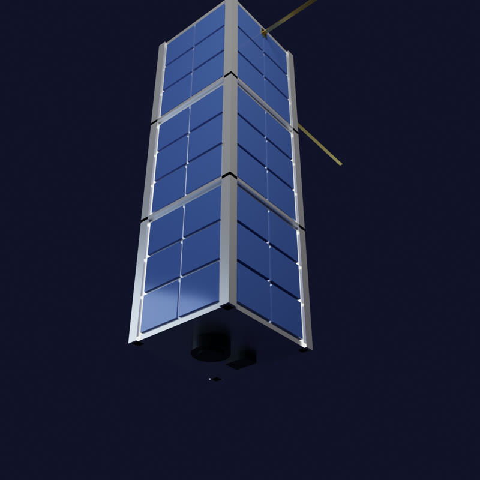
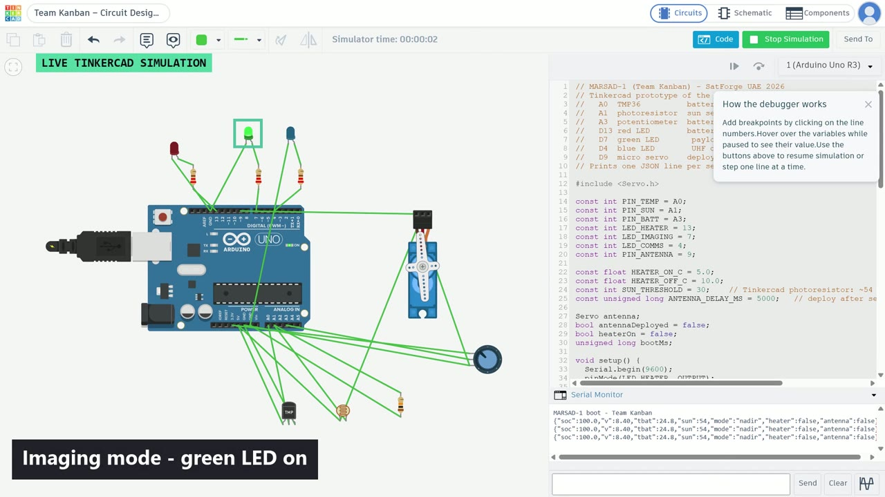
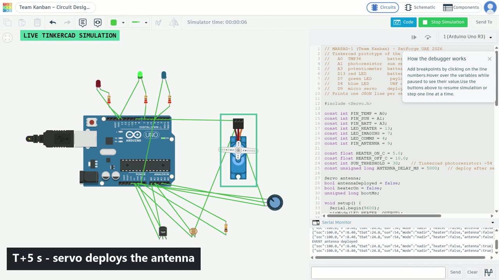
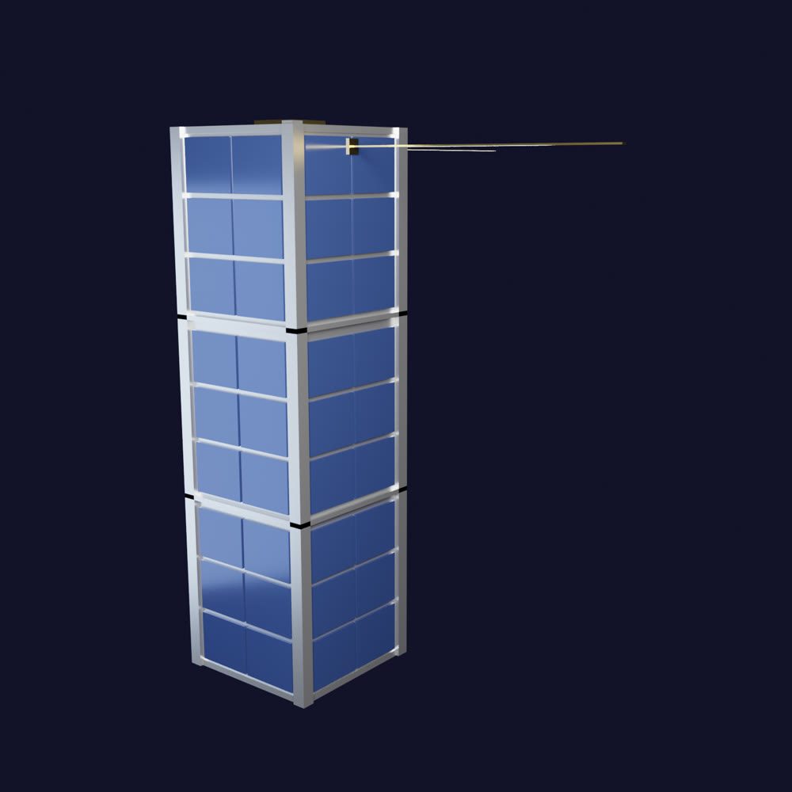

MARSAD-1
Contents
- 1Executive summary
- 2Problem & motivation
- 3Mission objectives & success criteria
- 4Orbit & concept of operations
- 5System architecture & subsystems
- 6Budgets: power, mass, volume, data, cost
- 7Prototype: virtual prototype, firmware & verification
- 83D design
- 9Ground segment v2 — Mission Control dashboard
- 10Risks & mitigations
- 11Next steps
- 12Key learnings
- AAppendix: links & repository
Changes since Phase 1 (v1.0 → v2.0)
| Section | Change |
|---|---|
| 7 Prototype | Expanded from a circuit description into the full prototype chapter: Tinkercad virtual prototype, ESP32-S3 flight-representative firmware, verification evidence from the recorded simulation (with video stills), a test matrix and an explicit physical-build status. |
| 9 Ground segment v2 | New Mission Control dashboard built to the SpacePoint Dashboard Design Manual: link status (SIM / LIVE / STALE / LOST), limit-coded status tiles, timestamped alarms, latest-readings table, fault injection, stale detection and a formal JSON data contract. |
| 10–12 | Risks, next steps and learnings updated for the final stage of the qualifiers. |
| Appendix | Adds the simulation video and competition poster links. |
| 1–6, 8 | Mission, CONOPS, subsystems, budgets and bill of materials unchanged from Phase 1 (all budgets still close). |
1Executive summary
MARSAD-1 (Arabic marsad, "observatory") is a 3U CubeSat designed by Team Kanban to detect and map harmful algal blooms ("red tides") and chlorophyll-a concentration along the UAE coastline of the Arabian Gulf and the Gulf of Oman. It flies in a 550 km sun-synchronous orbit, images UAE coastal waters with a 5 MP camera and an 11-channel spectral sensor, computes a chlorophyll index on board, and sends compact bloom alerts to a ground station in Abu Dhabi over a 433 MHz LoRa link.
All design budgets close with margin on the SpacePoint Madar mission designer, using a bill of materials of 17 real, purchasable components:
Work produced across the qualifiers:
- Phase 1 — digital design. Individual and team Madar mission designs (all phases cleared), a Tinkercad 3D model of the 3U spacecraft, a live mission dashboard and a competition poster.
- Prototype. A Tinkercad virtual prototype (Arduino Uno standing in for the ESP32-S3 flight computer) that runs the CONOPS mode logic, heater control and antenna deployment, and streams the same JSON telemetry the dashboard reads. Its behaviour was verified in simulation and recorded on video (Section 7).
- Flight-representative firmware for the ESP32-S3 with the real EPS, thermal and payload sensors (INA219, BME280, DS18B20, AS7341), written against the same data contract.
- Ground segment v2. A mission-control dashboard with limit monitoring, alarms, stale-data detection, fault injection and a live USB link to the prototype (Section 9).
2Problem & motivation
Harmful algal blooms occur when certain species of phytoplankton multiply rapidly. Some species discolour the water red or brown ("red tides"), deplete dissolved oxygen as the bloom decays, or produce toxins. The warm, shallow and semi-enclosed waters of the Arabian Gulf and the Gulf of Oman are susceptible to such events, and large blooms have been recorded in the region.
For the UAE the impact is direct:
- Desalination — much of the country's drinking water comes from seawater desalination. Dense blooms can clog intake screens and foul pre-treatment filters and reverse-osmosis membranes, and plants have had to reduce output or shut down during severe events.
- Fisheries and aquaculture — oxygen depletion and toxins can cause fish kills and force closures.
- Coastal tourism and public health — discoloured water and dead fish on beaches, and potential toxin exposure.
3Mission objectives & success criteria
| Item | Statement |
|---|---|
| Primary objective | Detect and map harmful algal blooms (red tides) and chlorophyll-a concentration along the UAE coastline of the Arabian Gulf and Gulf of Oman using multispectral imaging, to give early warning to desalination plants, fisheries and coastal authorities. |
| Success criterion | Downlink at least one usable, cloud-free multispectral image of UAE coastal waters per day and deliver a chlorophyll-a bloom map to the ground team within 24 hours, for 6 consecutive months. |
| Minimum lifetime | 12 months. |
| Mission tasks | Nadir-pointed multispectral imaging during sunlit passes over the Gulf, onboard compression and bloom detection (NDCI), and downlink of alerts and data over UAE ground-station passes, with UHF telemetry and commanding. |
| Secondary objective | Demonstrate a low-cost (< 3,000 AED bill of materials) student CubeSat architecture with onboard data reduction. |
4Orbit & concept of operations
Orbit
| Type | Sun-synchronous (SSO) |
| Altitude | 550 km |
| Inclination | 97.6° |
| Local time of descending node | 10:30 |
| Period | 95 min |
| Orbits per day | 15 |
| Ground station | Abu Dhabi (24.45° N, 54.38° E), 10° elevation mask |
Why SSO at 550 km
A sun-synchronous orbit crosses the UAE at nearly the same local solar time every day, giving consistent illumination for ocean-colour measurements — important when comparing bloom maps day to day. A mid-morning node (10:30) avoids the strongest afternoon convection and sun glint. 550 km is a common rideshare altitude with a multi-year natural decay time, well beyond the 12-month mission.
Concept of operations — one 95-minute orbit
Timeline — nominal mode allocation per orbit (as entered in the Madar CONOPS phase; total 95 min = orbit period).
| Mode | Min / orbit | Active components | Load (W) |
|---|---|---|---|
| Sun-pointing (charging) | 40 | OBC, IMU, magnetorquers, solar array, EPS (battery, MPPT/BMS, bucks, INA219), temp sensors, structure switches | 1.64 |
| Nadir / payload imaging | 10 | Sun-pointing set + OV5640 camera, AS7341 spectral sensor, GPS, microSD | 2.52 |
| Ground-station pass | 10 | Sun-pointing set + GPS, SX1278 LoRa radio, antenna, microSD | 2.45 |
| Safe / eclipse | 35 | OBC, IMU, EPS, temp sensors, battery heater; magnetorquers and payload off | 1.88 |
Mode logic. The flight software enters safe whenever the satellite is in eclipse or battery state of charge drops below 20%. In sunlight it holds a sun-pointing, charging attitude; when the ground track crosses the UAE target box and charge is above 60% it switches to nadir imaging; inside the Abu Dhabi visibility circle it enters the ground-pass mode and downlinks queued alerts. The battery heater operates with hysteresis (on below 5 °C, off above 10 °C).
5System architecture & subsystems

CDHS — command & data handling
An ESP32-S3 (dual-core 240 MHz, 8 MB PSRAM, 16 MB flash) runs the flight-software state machine, schedules imaging, reads all sensors over I²C/SPI, and formats telemetry. A 32 GB microSD stores raw images, spectra and logs between ground passes. The ESP32-S3's camera interface (DVP) connects the imager directly.
Payload — bloom detection
The OV5640 5 MP camera captures RGB context imagery for visual confirmation. The AS7341 11-channel spectral sensor (350–1000 nm) measures water-leaving light in narrow bands. Chlorophyll-rich bloom water reflects more strongly in the red-edge (~708 nm) relative to the chlorophyll absorption band (~665 nm), which is captured by the Normalised Difference Chlorophyll Index:
NDCI is computed on board. Pixels or samples above a threshold are tagged, and a compact alert packet (location, index, time) is queued for the next ground pass. Full images are kept and downlinked selectively. On the AS7341 the closest available bands are used (F8 ≈ 680 nm and the NIR channel as the red-edge proxy); calibration against reference data is planned for the next phase.
ADCS — attitude determination & control
An ICM-20948 9-DoF IMU (gyro, accelerometer, magnetometer) provides attitude determination; a 3-axis magnetorquer set driven by a DRV8833 H-bridge detumbles the spacecraft (B-dot) and holds coarse sun/nadir pointing. A u-blox NEO-M8N GPS gives position for geotagging images and precise time for imaging schedules.
COMMS — communications
A Semtech SX1278 LoRa transceiver at 433 MHz (up to +20 dBm) carries telemetry, commands and bloom alerts. LoRa's long-range, low-rate modulation suits small alert packets. A deployable spring-steel tape monopole is released by a burn-wire after separation.
EPS — electrical power
Six 1.1 W body-mounted solar cells (6.6 W) charge a 2S Li-ion 18650 pack (7.4 V, 3.4 Ah, ≈ 25 Wh) through a CN3791 MPPT charger with 2S BMS. MP1584 buck converters provide regulated 5 V and 3.3 V rails, with load switching from the OBC, and an INA219 monitors bus voltage and current.
Thermal
A BME280 and DS18B20 probes monitor internal, battery and panel temperatures. A 1 W Kapton heater pad on the battery keeps the cells above 0 °C during the 35-minute eclipse.
Structure
A 3U aluminium 6061 frame (100 × 100 × 340.5 mm envelope, four 8.5 mm rails, 1U separator rings) with a PC/104-style board stack, following the CubeSat Design Specification, plus two deployment (kill) switches.
6Budgets
All budgets were computed and locked in the SpacePoint Madar mission designer. Power per component follows the designer's convention P = V × I at the operating point.
6.1 Power

| Mode | Load (W) | Min | mWh / orbit |
|---|---|---|---|
| Sun-pointing | 1.64 | 40 | 1,094 |
| Nadir imaging | 2.52 | 10 | 420 |
| Ground pass | 2.45 | 10 | 409 |
| Safe / eclipse | 1.88 | 35 | 1,098 |
| Total | 95 | 3,020 |
Sizing. Total load with every component on is 3.917 W (3,916.5 mW). With 1.1 W cells, ⌈3.917 / 1.1⌉ = 4 cells would just cover it; we selected 6 cells = 6.60 W, a +2.68 W (68%) margin that covers cosine losses of body-mounted cells and degradation.
Energy. 3.02 Wh is used per orbit (45.3 Wh per day). The 25 Wh battery covers the 35-minute eclipse load (≈ 1.1 Wh) with a shallow depth of discharge (≈ 4–5%), which favours cycle life.
6.2 Mass & volume

Mass: 0.845 kg against the 4.0 kg 3U limit — a 3.16 kg (79%) margin. The structure (450 g) and EPS (273 g, mostly the six panels and battery) dominate.
Volume: 500.6 cm³ of component volume against 3,000 cm³ available (the frame is counted by its material footprint, not its envelope). The large margin leaves room for harnessing, a larger battery, or a second payload in later phases.
6.3 Data
| Source | Type | Size / meas. | Meas. / min | Active min | Per day | Handling |
|---|---|---|---|---|---|---|
| OV5640 camera | Image | 500 KB | 1 | 10 | 75.0 MB | Stored; selected scenes downlinked |
| AS7341 spectral | Science | 0.05 KB | 60 | 10 | 450 KB | Stored + sent |
| ESP32-S3 OBC | Telemetry | 0.2 KB | 1 | 95 | 285 KB | Stored + sent |
| ICM-20948 IMU | Telemetry | 0.03 KB | 6 | 95 | 257 KB | Stored |
| NEO-M8N GPS | GPS/Nav | 0.1 KB | 6 | 20 | 180 KB | Stored + sent |
| SX1278 LoRa | TT&C | 0.25 KB | 6 | 10 | 225 KB | Sent |
| EPS / thermal / other | Housekeeping | 0.01–0.05 KB | 1–2 | 10–95 | small | Stored (key values sent) |
| Total generated: 5.00 MB per orbit | 75.0 MB | 74.78 MB stored · 1.42 MB sent | ||||
6.4 Cost & bill of materials
| # | Component | Subsystem | Qty | V | mA | P (mW) | Mass (g) | Cost (AED) | Vendor |
|---|---|---|---|---|---|---|---|---|---|
| 1 | ESP32-S3 on-board computer | CDHS | 1 | 3.3 | 240 | 792 | 10 | 60 | DigiKey |
| 2 | OV5640 5 MP camera | Payload | 1 | 3.3 | 140 | 462 | 8 | 45 | Arducam |
| 3 | AS7341 11-channel spectral sensor | Payload | 1 | 3.3 | 1 | 3.3 | 3 | 65 | Adafruit |
| 4 | ICM-20948 9-DoF IMU | ADCS | 1 | 3.3 | 4 | 13.2 | 3 | 55 | SparkFun |
| 5 | 3-axis magnetorquers + DRV8833 | ADCS | 1 | 5 | 150 | 750 | 45 | 120 | DigiKey |
| 6 | u-blox NEO-M8N GPS | ADCS | 1 | 3.3 | 45 | 148.5 | 12 | 75 | u-blox |
| 7 | SX1278 LoRa 433 MHz transceiver | COMMS | 1 | 3.3 | 120 | 396 | 5 | 35 | DigiKey |
| 8 | Deployable 433 MHz tape antenna | COMMS | 1 | 5 | 1 | 5 | 20 | 40 | Amazon.ae |
| 9 | Solar cell, 6 V 1 W | EPS | 6 | 6 | 1 | 6 | 150 | 150 | Amazon.ae |
| 10 | 2S Li-ion 18650 pack 7.4 V 3.4 Ah | EPS | 1 | 7.4 | 1 | 7.4 | 95 | 90 | DigiKey |
| 11 | CN3791 MPPT charger + 2S BMS | EPS | 1 | 7.4 | 5 | 37 | 10 | 40 | AliExpress |
| 12 | MP1584 buck converters (5 V, 3.3 V) | EPS | 2 | 7.4 | 3 | 22.2 | 16 | 40 | DigiKey |
| 13 | INA219 current/voltage monitor | EPS | 1 | 3.3 | 1 | 3.3 | 2 | 25 | Adafruit |
| 14 | MicroSD storage module (32 GB) | CDHS | 1 | 3.3 | 80 | 264 | 5 | 35 | Amazon.ae |
| 15 | BME280 + DS18B20 temperature sensors | Thermal | 1 | 3.3 | 1 | 3.3 | 6 | 30 | SparkFun |
| 16 | Kapton battery heater pad (1 W) | Thermal | 1 | 5 | 200 | 1000 | 5 | 35 | Amazon.ae |
| 17 | 3U Al-6061 frame + PC/104 stack | Structure | 1 | 3.3 | 1 | 3.3 | 450 | 480 | CubeSatShop |
| Total (17 line items) | 3,916.5 | 845 | 1,420 |
Cost: 1,420 AED against the 3,000 AED budget (1,580 AED margin). The frame is the most expensive item (480 AED); the margin can absorb a flight-grade antenna, spare parts and test equipment.
7Prototype
The prototype was developed in two layers that share one mode logic and one telemetry format: a virtual prototype in Tinkercad Circuits that proves the flight-software behaviour, and flight-representative firmware for the ESP32-S3 on-board computer that reads the real sensors from the bill of materials. Both stream JSON telemetry that the mission-control dashboard (Section 9) ingests.
7.1 Tinkercad virtual prototype
An Arduino Uno stands in for the ESP32-S3, and each part represents one spacecraft function. Circuit: tinkercad.com/things/cY2kWDnTdZB (Team Kanban – Circuit Design - Awaiz Ahmed); source firmware/tinkercad_prototype/tinkercad_prototype.ino.

| Pin | Part | Represents |
|---|---|---|
| A0 | TMP36 | Battery temperature |
| A1 | Photoresistor + 10 kΩ pull-down | Sun sensor (sunlit / eclipse) |
| A3 | Potentiometer on 3.3 V | Battery-voltage stand-in → SoC |
| D13 | Red LED + 220 Ω | Battery heater |
| D7 | Green LED + 220 Ω | Payload imaging (nadir) |
| D4 | Blue LED + 220 Ω | Downlink / ground pass |
| D9 | Micro servo | Antenna deployment |
Conversions. TMP36: T = (V − 0.5) × 100 °C. The potentiometer's 0–3.3 V maps onto the 2S pack range, Vbat = 6.0 + ADC × 2.4/675 (capped at 8.4 V), and SoC = (Vbat − 6.0) / 2.4. The photoresistor counts as sunlit above an ADC reading of 30.
Mode logic (CONOPS), evaluated once per second:
- safe if SoC < 20% or in eclipse;
- ground pass for 2 s of every 10 s once the antenna is deployed;
- nadir imaging if SoC > 60%;
- otherwise sun-pointing / charging.
Heater: ON below 5 °C, OFF above 10 °C (hysteresis). Antenna: servo 0° → 90° five seconds after boot (separation timer).
7.2 ESP32-S3 flight-representative firmware
firmware/marsad_telemetry/marsad_telemetry.ino targets the flight computer from the BOM and replaces each stand-in with the real sensor:
| Sensor / output | Interface | Use in firmware |
|---|---|---|
| INA219 (0x40) | I²C, SDA GPIO8 / SCL GPIO9 | Bus voltage and load current → load power. SoC is seeded from the open-circuit voltage, then coulomb-counted against the 25.16 Wh pack. |
| BME280 (0x76) | I²C | Internal (avionics) temperature. |
| DS18B20 | OneWire, GPIO4 | Battery temperature, which drives the heater. |
| AS7341 (0x39) | I²C | Payload: NDCI = (NIR − F8680 nm) / (NIR + F8), using the nearest available bands to the 708 / 665 nm definition. |
| Heater MOSFET | GPIO5 | Kapton pad, bang-bang control with 5 °C / 10 °C hysteresis. |
It prints one JSON line per second at 115200 baud (soc, v, load, tint, tbat, ndci, heater) and omits any field whose sensor is not detected, so a partial bench build still produces valid telemetry.
7.3 Verification evidence (observed in simulation)
The virtual prototype was run in Tinkercad and screen-recorded. The video is published at 4waiz.github.io/marsad-1-dashboard/video/MARSAD-1_simulation.mp4. The stills below come from it; the simulator clock is visible at the top of each frame.


Figure 5 — Stills from the recorded Tinkercad simulation (video time 26, 30 and 35 s).
Serial output as observed (excerpt; values are constant because the inputs were left at their defaults):
MARSAD-1 boot - Team Kanban
{"soc":100.0,"v":8.40,"tbat":24.8,"sun":54,"mode":"nadir","heater":false,"antenna":false}
EVENT antenna deployed
{"soc":100.0,"v":8.40,"tbat":24.8,"sun":54,"mode":"nadir","heater":false,"antenna":true}
{"soc":100.0,"v":8.40,"tbat":24.8,"sun":54,"mode":"gs","heater":false,"antenna":true}
The TMP36 at its default setting read 24.8 °C (ADC quantisation of 25 °C). The potentiometer at full scale gave 8.40 V and 100% SoC, and the photoresistor read 54 (sunlit; threshold 30). The antenna deployed at T+5 s, logged on the first loop after the 5 s timer. The mode switched nadir → gs for 2 s of every 10 s and back.
7.4 Test matrix
Only results we actually observed are marked PASS.
| # | Test | Method | Expected | Observed | Status |
|---|---|---|---|---|---|
| 1 | Boot and telemetry stream | Tinkercad simulation | Boot banner, then one JSON line per second | Banner printed; JSON every second | PASS |
| 2 | Battery temperature (TMP36) | Tinkercad, sensor at default 25 °C | ≈ 25 °C | 24.8 °C | PASS |
| 3 | Battery voltage → SoC | Tinkercad, pot at full scale | 8.40 V, SoC 100% | "v":8.40, "soc":100.0 | PASS |
| 4 | Sun detection (sunlit) | Tinkercad, default light level | ADC > 30 → sunlit, not safe | "sun":54; mode not safe | PASS |
| 5 | Antenna deployment | Tinkercad simulation | Servo 0° → 90° at T+5 s; event logged; antenna:true | EVENT antenna deployed at T+5 s; servo rotated (Fig. 5b) | PASS |
| 6 | Nadir imaging mode | Tinkercad, SoC 100%, sunlit | Mode nadir; green LED on | As expected (Fig. 5a) | PASS |
| 7 | Ground-pass scheduling | Tinkercad simulation | gs for 2 s of every 10 s after deploy; blue LED on, green off | nadir → gs every 10 s and back (Fig. 5a, 5c) | PASS |
| 8 | Eclipse → safe mode | Cover the sun sensor; dashboard | Mode safe; payload and downlink off | Verified in dashboard fault-injection; hardware test pending | PARTIAL |
| 9 | Low battery → safe mode | Pot below 20%; dashboard Low battery | SoC < 20% forces safe; SoC tile red; alarm raised | Verified in dashboard fault-injection; hardware test pending | PARTIAL |
| 10 | Cold battery → heater | Cool the TMP36 / DS18B20; dashboard Cold battery | Heater ON below threshold, OFF above 10 °C; battery-temperature tile amber / red | Verified in dashboard fault-injection; hardware test pending | PARTIAL |
| 11 | Link loss → stale | Dashboard Link loss | Link STALE after 3 s, LOST after 10 s; tiles grey | Verified in dashboard fault-injection; hardware test pending | PARTIAL |
| 12 | Live USB telemetry to dashboard | ESP32-S3 via Web Serial, 115200 baud | Link LIVE; tiles update at 1 Hz | Not yet run; needs the physical board | PENDING |
| 13 | Flight sensors (INA219, BME280, DS18B20, AS7341) | Bench test of the ESP32-S3 build | Plausible readings; NDCI differs between clear and algae-tinted water | Not yet run; firmware written, hardware not assembled | PENDING |
7.5 Physical build status
83D design
The spacecraft was modelled to the CubeSat Design Specification 3U envelope and assembled in Tinkercad 3D: tinkercad.com/things/4Qi0WBiqTus (Team Kanban – 3D Design - Awaiz Ahmed). Parts were generated parametrically (cad/make_cubesat.py), imported as colour-separated STL parts and rendered in Blender.

| Feature | Detail |
|---|---|
| Envelope | 100 × 100 × 340.5 mm (3U) |
| Frame | Four 8.5 mm corner rails, top and bottom plates, two 1U separator rings |
| Solar cells | 72 body-mounted cell areas (2 × 3 per unit, 4 faces, 3 units) |
| Nadir face | Camera lens barrel and spectral-sensor window |
| Zenith face | GPS patch antenna, two deployment kill switches |
| Antennas | Two deployed 433 MHz tape elements (170 mm) with hinge blocks |
| Colours | Silver (Al-6061), deep blue (cells), gold (antennas), black (optics) |
9Ground segment v2 — Mission Control dashboard
The ground segment is a browser-based mission-control dashboard, live at 4waiz.github.io/marsad-1-dashboard and open source. Version 2 follows the SpacePoint Dashboard Design Manual: an operator should see at a glance whether the link is alive, whether every parameter is inside its limits, and what went wrong and when.
09:42:11 WARN Battery temp 4.2 °C < 5
09:41:58 INFO Heater ON
09:41:40 INFO Link LIVE (USB 115200)
gen 5.10 · tbat 4.2 · tint 21.4
mode nadir · heater true
antenna true · storage 412 MB
Figure 7 — Layout schematic of the v2 mission-control screen (illustrative values) showing each status colour.
Header and link status
The header shows the mission name, the link status and the age of the last packet. SIM: the built-in simulator (driven by the orbit model and design budgets) is the data source. LIVE: packets are arriving from the prototype over Web Serial. STALE: no packet for 3 s. LOST: no packet for 10 s.
Status colours
Green nominal, amber warning, red critical, grey stale or no data. The status word is always printed next to the colour, so the screen does not rely on colour alone. Each field goes STALE 3 s after its own last update. Out-of-range or non-numeric values are flagged INVALID, and fields never received show "no data".
Alarms, readings and fault injection
Every transition into warning or critical is written to the alarms panel with a UTC timestamp. The latest-readings table lists every field of the most recent packet. Fault-injection buttons (Low battery, Cold battery / heater fault, Link loss, Sensor glitch, Clear all) let the team rehearse anomaly response and check that limits, alarms and mode changes fire correctly before hardware exists. These buttons provided the PARTIAL results in the test matrix.
Prototype link
Connect prototype (USB) uses the browser's Web Serial API (Chrome / Edge) at 115200 baud. Newline-delimited JSON is parsed at 1 Hz and switches the source from SIM to LIVE.
Limits implemented
| Parameter | Unit | Nominal | Warning (amber) | Critical (red) |
|---|---|---|---|---|
| Battery state of charge | % | ≥ 40 | < 40 | < 20 (also forces SAFE mode) |
| Bus voltage (2S Li-ion) | V | 7.0–8.4 | < 7.0 | < 6.6 or > 8.5 |
| Battery temperature | °C | 5–40 | < 5 or > 40 | < 0 or > 45 |
| Internal temperature | °C | −5 to 50 | < −5 or > 50 | < −10 or > 60 |
| Panel temperature | °C | −40 to 80 | < −40 or > 80 | < −50 or > 95 |
| Load power | W | ≤ 4.5 | > 4.5 | > 6.0 |
| Power margin (gen − load) | W | Shown for context; negative in eclipse by design, so no alarm limit | ||
| Storage used (of 2,048 MB) | MB | ≤ 1,600 | > 1,600 | > 1,900 |
The bus-voltage limits follow the simulator's pack model v = 6.0 + 2.4 × SoC/100. The dashboard simulator switches the heater on below 6 °C and off above 10 °C; the firmware uses 5 °C / 10 °C. Both keep the battery above the 5 °C warning line.
Data contract (JSON, 1 Hz, newline-delimited)
One object per line. Every field is optional, so a packet may carry any subset; anything not received shows "no data".
| Field | Unit / type | Meaning | Sent by |
|---|---|---|---|
| soc | % (0–100) | Battery state of charge | Tinkercad, ESP32-S3 |
| v | V | Battery bus voltage | Tinkercad, ESP32-S3 |
| load | W | Power consumed by the loads | ESP32-S3 |
| gen | W | Power generated by the solar array | Simulator |
| tint | °C | Internal (avionics) temperature | ESP32-S3 |
| tbat | °C | Battery temperature | Tinkercad, ESP32-S3 |
| tpanel | °C | Solar-panel temperature | Simulator |
| storage | MB | Onboard storage used (of 2,048) | Simulator |
| mode | string | sun | nadir | gs | safe | Tinkercad, simulator |
| lat / lon | deg | Sub-satellite point | Simulator (GPS later) |
| ndci | — (−1 to 1) | Normalised Difference Chlorophyll Index | ESP32-S3 |
| heater | bool | Battery heater on | Tinkercad, ESP32-S3 |
| antenna | bool | Antenna deployed | Tinkercad, simulator |
| sun | % (0–100) | Sun-sensor light level | Tinkercad (raw ADC) |
| t | s | Seconds since boot (optional) | — |
10Risks & mitigations
| Risk | Impact | Mitigation |
|---|---|---|
| Physical prototype not yet built or bench-tested | High | All parts are stocked items from the BOM; firmware is already written and tolerates missing sensors; build order puts EPS and thermal (tests 9–12) first; dashboard fault injection has already exercised the alarm paths. |
| Simulation differs from hardware (Uno vs ESP32-S3, TMP36 vs DS18B20, pot vs real pack) | Medium | Same mode thresholds and JSON contract on both; re-run the full test matrix on hardware; calibrate sensors against a reference thermometer and multimeter. |
| Downlink capacity (1.42 MB/day) | High | Onboard NDCI processing; send alerts and thumbnails, not raw imagery; prioritise bloom-flagged scenes; option for additional ground stations. |
| Radiation effects on COTS electronics (latch-up, bit flips) | High | Watchdog and safe mode, INA219 over-current detection with load power-cycling, CRC on stored data, periodic reboots. |
| Cloud cover hides the target | Medium | 15 orbits/day and daily revisits; multi-day composites; bloom alerts only from cloud-free samples; success criterion requires one usable image per day, not per pass. |
| Battery too cold in eclipse | Medium | Kapton heater with hysteresis; battery-temperature limits and alarms; heater energy already in the power budget; cold-battery case rehearsed in the dashboard. |
| NDCI accuracy without calibration | Medium | Bench check with clear vs algae-tinted water; ground calibration against reference ocean-colour data; conservative thresholds; human confirmation with RGB images. |
| Coarse pointing with magnetorquers only | Medium | Wide field-of-view imaging; GPS + IMU geotagging; image only when attitude is stable. |
| Antenna fails to deploy | Medium | Redundant burn-wire attempts; beacon via the stowed antenna at reduced range; deployment event telemetered and alarmed. |
| Telemetry format drift between firmware and dashboard | Low | One written data contract (Section 9); optional fields; INVALID flagging of bad values. |
| Web Serial only in Chromium browsers | Low | Operators use Chrome or Edge; the SIM mode works in any browser. |
11Next steps
- Assemble the ESP32-S3 bench prototype (INA219, DS18B20, BME280, heater MOSFET, then AS7341) and stream marsad_telemetry.ino to the dashboard in LIVE mode (test 12).
- Hardware verification: re-run tests 8–11 on the bench: lamp and cover for sun and eclipse, a cold pack on the DS18B20 for the heater loop, a bench supply for low battery, and unplugging USB for link loss. Then sensor checks (test 13), including NDCI on clear vs algae-tinted water.
- EPS chain: solar cell → CN3791 MPPT → 2S pack → MP1584 rails, with charge/discharge cycles logged by the INA219; Multisim model of the same chain.
- Communications: SX1278 LoRa range test between two modules, and a 433 MHz link budget for 550 km to Abu Dhabi.
- Firmware: merge the CONOPS mode logic and antenna timer into the ESP32-S3 sketch, add mode, sun and t fields and a watchdog.
- Mechanical: fit-check the board stack and harness inside the 3U frame model; print a 1U test section.
12Key learnings
- Budgets drive the design. The power budget set the array at six cells and made the eclipse heater a visible line item.
- Downlink, not mass, is the bottleneck. Capturing 75 MB/day while sending 1.42 MB/day forced onboard processing.
- Simulate first. Tinkercad exposed wiring mistakes and let us verify the mode logic before buying parts.
- Write the data contract early. Fixing the JSON fields first let the simulator, the Tinkercad sketch, the ESP32-S3 firmware and the dashboard be built in parallel.
- Design for failure, then rehearse it. Limits, stale detection and fault injection made "what happens when it goes wrong" testable before hardware exists.
- Label what is real. Marking SIM vs LIVE data and PASS vs PARTIAL results keeps the team and reviewers honest about where the project stands.
AAppendix: links & repository
| Item | Link |
|---|---|
| Mission Control dashboard | https://4waiz.github.io/marsad-1-dashboard/ |
| Prototype simulation video | https://4waiz.github.io/marsad-1-dashboard/video/MARSAD-1_simulation.mp4 |
| Tinkercad circuit | https://www.tinkercad.com/things/cY2kWDnTdZB |
| Tinkercad 3D design | https://www.tinkercad.com/things/4Qi0WBiqTus |
| Competition poster (Canva) | https://canva.link/66027wdcw95hqls |
| Source repository | https://github.com/4waiz/marsad-1-dashboard |
| Phase 1 report (v1.0) | https://4waiz.github.io/marsad-1-dashboard/report/ |
| Prototype firmware | firmware/tinkercad_prototype/ · firmware/marsad_telemetry/ |
| CAD & render scripts | cad/make_cubesat.py · cad/render_cubesat.py |
The cover image is an AI-generated artist's impression. All other figures come from the team's own design data, models, circuit simulation and dashboard; Figure 7 is a layout schematic with illustrative values.